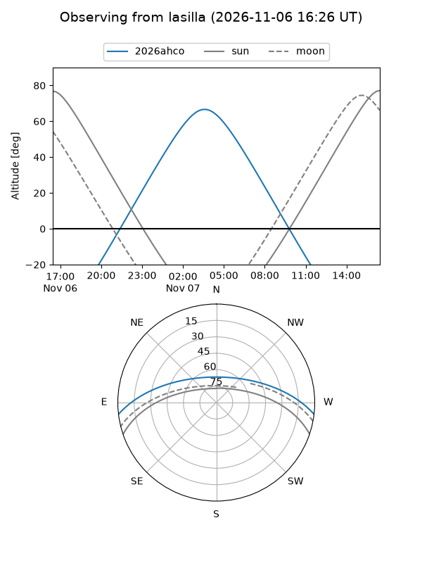
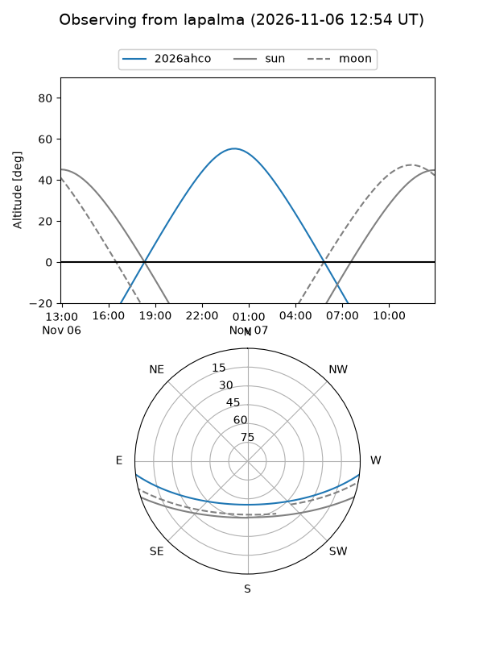
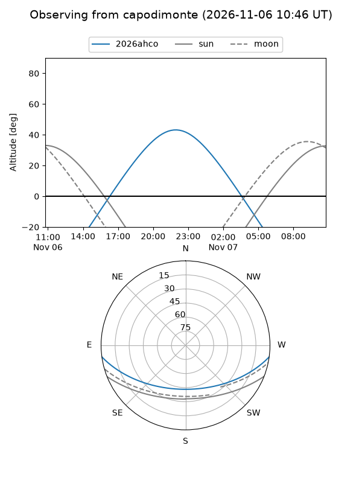
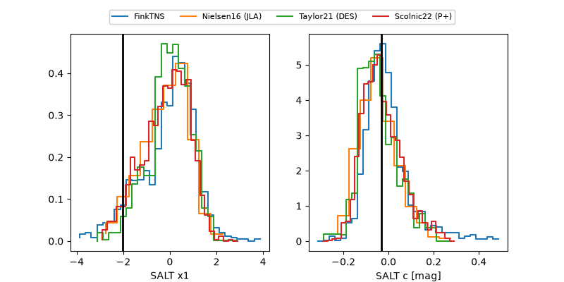

2026ahco
Target 2026ahco at 2026-11-06 18:59
Aliases and brokers:
FINK-ZTF: ztf.fink-portal.org/ZTF26aceardl
Lasair-ZTF: lasair-ztf.lsst.ac.uk/objects/ZTF26aceardl
ALeRCE-ZTF: alerce.online/object/ZTF26aceardl
YSE-PZ: ziggy.ucolick.org/yse/transient_detail/2026ahco
TNS name: wis-tns.org/object/2026ahco
Direct TNS query: direct search
alt names
ZTF26aceardl (ztf,fink_ztf)
2026ahco (tns,yse)
Coordinates:
equatorial (ra, dec) = 29.0694,-6.07918
equatorial (HMS+DMS) = 01:56:16.67,-06:04:45.04
galactic (l, b) = (162.0673,-63.90823)
Flags:
peak dt: +6.6
Photometry:
last ztfg=20.11, ztfr=20.07
1 ztfg, 2 ztfr detections
Lightcurve
Visibility



Additional plots
